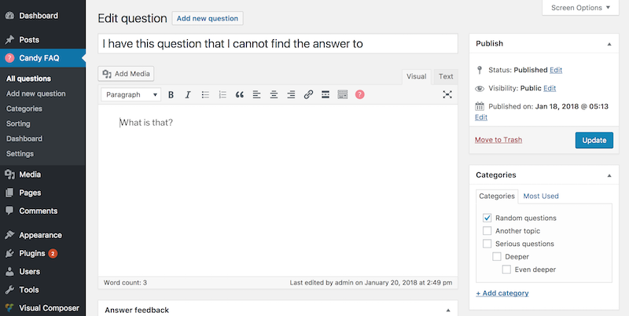
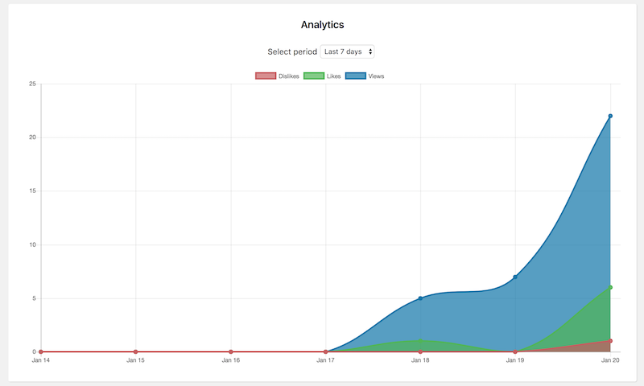

“Candy FAQ” Documentation by “KonstruktStudio” v1.0.0
Candy FAQ - Smart FAQ module for WordPress with Analytics
Created: 1/20/2018
By: KonstruktStudio
Email: konstrukteam@gmail.com
Thank you for purchasing our plugin. If you have any questions that are beyond the scope of this help file, please feel free to email via my user page contact form here. Thank you so much!
Table of Contents
- Features
- Installation
- Adding content
- Adding shortcodes
- Sorting
- Rating
- Filter
- Dashboard
- Google Analytics
- Localization
Features - top
- Instant live FAQ filter
- Questions are organised in categories
- Visual shortcode builder
- Visual Composer mappings available
- Unlimited design options
- Customers can vote for questions and leave feedback
- Analytics dashboard, with views, likes and dislikes weekly / monthly graph
- Easy drag n drop questions reorder
- Show or hide question views, likes and dislikes buttons and count with custom icons
- Powerful options panel
- Style presets available
- Typography with 600+ Google fonts
- Responsive design
- Documentation
- Translation ready
Installation - top
First of all, you need to install plugin. Login to your WordPress admin and go to Plugins -> Add new.
Then click Upload Plugin button at the top of the screen, Choose the zip file you have received after purchasing item and press Install now

After the plugin has been installed, press Activate. After that you should see new Candy FAQ section under Posts. This means you have successfully installed and activated plugin.
Adding Content - top
Adding FAQ questions is very similar to creating posts in WordPress. Title is used for question and content is used for answer. To create new question, go to Candy FAQ / Add New question, write title, edit content, select (or create new) category for it and press Publish. After that this question and answer will be available for use on any page or post via shortcodes or Visual Composer module.

Note, that all questions should belong to some category, because categories are used in shortcodes.
Adding Shortcodes - top
When you have your FAQ content ready, you can display it on pages and posts. To do it, open the page you want to add FAQ to, select an empty line in content editor and press shortcode icon in editor panel.
This will open new shortcode dialog.
Here you can select FAQ module options and select categories you want to display on this page. You can leave categories empty to show all questions. Note, that you can reorder categories in the right part of term selector.
By default, only necessary settings are visible in shortcode, so that you can configure desired appearance and behaviour once in plugin settings and insert different categories quickly on different pages. But you can of course go on and override style preset directly in shortcode.
After tweaking desired options, press Insert. Shortcode will be added to editor. Press Update to save page. FAQ module should be added to page content.
Once you add shortcode to content, you can also edit it easily. To do this simply select shortcode in editor and press Candy FAQ icon once again. Our shortcode builder will edit added shortcode instead of adding new. Just make sure you have selected the whole shortcode.
You can also use Visual Composer module to add FAQ. We've added mappings for all shortcode options.
Sorting - top
FAQ questions have flexible sorting options. By default, custom sorting is enabled in settings.
In this mode you can go to Candy FAQ - Sorting and simply reorder your questions via drag n drop.
You can also turn custom sorting off and use predefined sorting, similar to how WordPress posts are ordered.
Rating - top
You can allow customers to leave rating (Likes or Dislikes) for each question. Rating has lots of styling options and it is tracked to analytics module, so you can analyze usefulness of your answers and improve them.
You can also show message after customers vote and allow them to post feedback (see Feedback in Settings).
Filter - top
FAQ items can be quickly searched using instant filter. Filter uses content already on page, no requests to server are made, so it works very fast. After customer types 2 or more character all items that do not have this text in title or content are hidden. If search matches single item, it can be set to open automatically.
Empty categories are hidden and categories count is updated. Visitor can press clear to see all answers again.
Dashboard - top
Candy FAQ Dashboard allows you to quickly see what's going on with you FAQ questions. At the top you can see FAQ statistics.
On the graph you can see how many likes, dislikes and views were tracked during each day. Note, that View is tracked when visitor toggles question open. View for each question is only tracked once during a single page view.

At the bottom you can see the charts with best and worst questions. You can use these to improve your content and make answers more helpful.
Google Analytics - top
You can track FAQ events, such as view, like, dislike and feedback directly to your Google Analytics dashboard. Note, that your site must use analytics.js script, not Google Tag Manager. Also note, that our plugin does not add GA tracking code to your site, this is usually done via theme settings or directly in header template.
In Settings, select options you want to track and configure the event fields. You can use either question title or ID to track events.
After users perform some interactions, your Google Analytics should receive custom events. Note, that sometimes events are not displayed until some time passes, especially for new accounts.
Localization - top
Candy FAQ is written according to WordPress i18n guidelines, so it can be translated easily.
First of all, if you simply need to translate it into single language, all strings used on client side are available via plugin settings.
If you need a multilingual site, our plugin works with WPML out of the box. Note, that you will need String Translation extension to translate strings, that are stored in database (plugin Settings). The process is same as for any content translated via WPML.
Once again, thank you so much for purchasing Candy FAQ. We are always glad to help you if you have any questions relating to this item. If you have a more general question relating to the items on CodeCanyon, you might consider visiting the forums and asking your question in the "Item Discussion" section.
KonstruktStudio